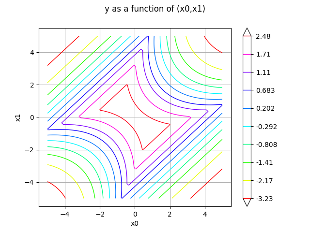
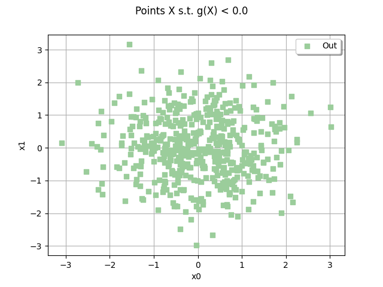
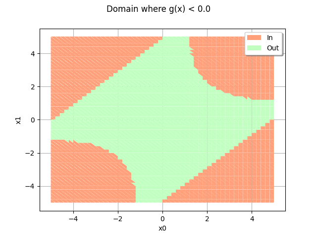

Note
Go to the end to download the full example code.
Using the Waarts four-branch serial system¶
References¶
Waarts, P.-H. (2000). Structural reliability using finite element methods: an appraisal of DARS: Directional Adaptive Response Surface Sampling. Ph. D. thesis, Technical University of Delft, The Netherlands. Pages 58, 69, 160.
Thèse Vincent Dubourg 2011, Méta-modèles adaptatifs pour l’analyse de fiabilité et l’optimisation sous contrainte fiabiliste, section “A two-dimensional four-branch serial system”, page 182
import openturns as ot
import openturns.viewer as otv
import otbenchmark as otb
problem = otb.FourBranchSerialSystemReliability()
event = problem.getEvent()
g = event.getFunction()
inputVector = event.getAntecedent()
distribution = inputVector.getDistribution()
Draw isolines
lowerBound = ot.Point([-5.0, -5.0])
upperBound = ot.Point([5.0, 5.0])
nbPoints = [100, 100]
_ = otv.View(g.draw(lowerBound, upperBound, nbPoints))

sampleSize = 500
drawEvent = otb.DrawEvent(event)
cloud = drawEvent.drawSampleCrossCut(sampleSize)
_ = otv.View(cloud)

Draw the limit state surface¶
bounds = ot.Interval(lowerBound, upperBound)
graph = drawEvent.drawLimitStateCrossCut(bounds)
graph.add(cloud)
graph
class=Graph name=Limit state surface implementation=class=GraphImplementation name=Limit state surface title=Limit state surface xTitle=x0 yTitle=x1 axes=ON grid=ON legendposition= legendFontSize=1 drawables=[class=Drawable name=Unnamed implementation=class=Contour name=Unnamed x=class=Sample name=Unnamed implementation=class=SampleImplementation name=Unnamed size=52 dimension=1 description=[t] data=[[-5],[-4.80392],[-4.60784],[-4.41176],[-4.21569],[-4.01961],[-3.82353],[-3.62745],[-3.43137],[-3.23529],[-3.03922],[-2.84314],[-2.64706],[-2.45098],[-2.2549],[-2.05882],[-1.86275],[-1.66667],[-1.47059],[-1.27451],[-1.07843],[-0.882353],[-0.686275],[-0.490196],[-0.294118],[-0.0980392],[0.0980392],[0.294118],[0.490196],[0.686275],[0.882353],[1.07843],[1.27451],[1.47059],[1.66667],[1.86275],[2.05882],[2.2549],[2.45098],[2.64706],[2.84314],[3.03922],[3.23529],[3.43137],[3.62745],[3.82353],[4.01961],[4.21569],[4.41176],[4.60784],[4.80392],[5]] y=class=Sample name=Unnamed implementation=class=SampleImplementation name=Unnamed size=52 dimension=1 description=[t] data=[[-5],[-4.80392],[-4.60784],[-4.41176],[-4.21569],[-4.01961],[-3.82353],[-3.62745],[-3.43137],[-3.23529],[-3.03922],[-2.84314],[-2.64706],[-2.45098],[-2.2549],[-2.05882],[-1.86275],[-1.66667],[-1.47059],[-1.27451],[-1.07843],[-0.882353],[-0.686275],[-0.490196],[-0.294118],[-0.0980392],[0.0980392],[0.294118],[0.490196],[0.686275],[0.882353],[1.07843],[1.27451],[1.47059],[1.66667],[1.86275],[2.05882],[2.2549],[2.45098],[2.64706],[2.84314],[3.03922],[3.23529],[3.43137],[3.62745],[3.82353],[4.01961],[4.21569],[4.41176],[4.60784],[4.80392],[5]] levels=class=Point name=Unnamed dimension=1 values=[0] labels=[0.0] show labels=true isFilled=false colorBarPosition=right isVminUsed=false vmin=0 isVmaxUsed=false vmax=0 colorMap=hsv alpha=1 norm=linear extend=both hatches=[] derived from class=DrawableImplementation name=Unnamed legend= data=class=Sample name=Unnamed implementation=class=SampleImplementation name=Unnamed size=2704 dimension=1 description=[y] data=[[-4.07107],[-3.92857],[-3.77839],...,[-3.77839],[-3.92857],[-4.07107]] color=#1f77b4 isColorExplicitlySet=true fillStyle=solid lineStyle=solid pointStyle=plus lineWidth=1,class=Drawable name=Out implementation=class=Cloud name=Out derived from class=DrawableImplementation name=Out legend=Out data=class=Sample name=Unnamed implementation=class=SampleImplementation name=Unnamed size=500 dimension=2 data=[[0.608202,0.189723],[-1.26617,-1.5599],[-0.438266,0.141706],[1.20548,-0.312877],[-2.18139,-1.09669],[0.350042,1.30628],[-0.355007,-0.603543],[1.43725,0.0844715],[0.810668,-1.01157],[0.793156,-0.45413],[-0.470526,0.184323],[0.261018,1.11103],[-2.29006,0.0332655],[-1.28289,-0.402727],[-1.31178,0.812135],[-0.0907838,0.137958],[0.995793,-0.552396],[-0.139453,0.712298],[-0.560206,0.657798],[0.44549,-0.2971],[0.322925,0.288142],[0.445785,-0.843501],[-1.03808,1.4814],[-0.856712,0.904859],[0.473617,0.90054],[-0.125498,0.211378],[0.351418,0.408217],[1.78236,-0.290709],[0.0702074,-1.03768],[-0.781366,0.403674],[-0.721533,-0.0361247],[-0.241223,-0.0439957],[-1.78796,1.57857],[0.40136,1.44503],[1.36783,-0.908343],[1.00434,-1.329],[0.741548,-0.476214],[-0.0436123,1.02238],[0.539345,-1.19788],[0.29995,2.59603],[0.407717,0.149855],[-0.485112,-0.390626],[-0.382992,-0.311655],[-0.752817,-0.451449],[0.257926,0.237096],[1.96876,0.624386],[-0.671291,-0.5553],[1.85579,0.765645],[0.0521593,0.509255],[0.790446,0.416132],[0.716353,-1.42826],[-0.743622,-0.155242],[0.184356,1.19865],[-1.53073,-0.189811],[0.655027,-1.09981],[0.538071,0.727195],[1.73821,0.566469],[-0.958722,-1.437],[0.377922,-0.253593],[-0.181004,0.898235],[1.67297,0.732674],[-1.03896,-0.109548],[-0.353552,-0.485969],[1.21381,-0.35672],[-0.777033,-1.25939],[-1.36853,0.0349764],[0.103474,-0.409638],[-0.89182,0.795517],[0.905602,-2.10814],[0.334794,-0.914884],[-0.483642,1.09502],[0.677958,-0.0632852],[1.70938,2.00363],[1.07062,-0.124881],[-0.506925,0.0604086],[-1.66086,-0.449676],[2.24623,0.15909],[0.759602,-2.04317],[-0.510764,1.06144],[-0.633066,-1.44415],[-0.957072,0.751101],[0.544047,0.844058],[0.814561,-1.23908],[-0.734708,0.743606],[-0.111461,1.43464],[0.994482,0.0770002],[-0.160625,-2.18739],[-0.938771,0.237613],[-1.96869,0.805032],[-0.657603,0.784197],[0.338751,1.02133],[1.01556,-0.35903],[0.637167,-1.16653],[-0.0899071,1.01787],[-0.855886,0.275839],[1.27128,0.907344],[-0.238253,0.359928],[1.3263,1.17828],[2.11968,1.57853],[-0.901581,2.0749],[-1.51696,0.956583],[-1.29938,-0.55536],[0.230372,0.0325259],[-3.09737,0.14397],[0.01323,0.449597],[-1.25743,0.236913],[1.02776,0.542507],[-0.766431,-0.248289],[0.217512,1.21991],[1.04533,0.619673],[0.331569,-2.66192],[-0.488205,1.16863],[-0.465482,0.116999],[0.332084,1.89271],[-0.167726,-0.140005],[3.01263,1.25032],[0.94204,-0.668092],[0.61189,-1.22571],[0.611715,-0.815251],[-1.5375,0.570898],[-2.4067,0.129027],[0.662936,-1.72668],[-0.65616,-0.0685241],[-0.751611,-0.00709083],[0.438177,0.0930031],[-0.455335,-0.976033],[1.86038,-0.518126],[0.219721,0.634669],[1.72546,-0.947611],[-0.543405,-1.13825],[-0.736749,0.109716],[-0.508206,0.847099],[-2.25867,-1.27154],[-0.5964,-0.790581],[-0.31468,1.58639],[-1.78274,-0.612232],[-0.684734,1.83936],[0.0611157,-0.291354],[0.87372,-0.600684],[-1.46295,-0.617409],[-0.318786,1.28646],[1.26314,0.461285],[-0.426726,0.371324],[-1.89234,1.36731],[-0.514391,-1.76574],[0.647229,1.10117],[0.00370249,0.483567],[0.729688,-1.36501],[-0.247234,0.277923],[0.479191,0.625947],[-0.0336098,1.04781],[-0.0367271,-0.465857],[0.110256,-1.64198],[-0.37687,-0.00722217],[-0.0955894,-0.980624],[0.109122,-1.74047],[-0.198754,-0.604914],[0.47362,-0.552203],[0.161637,-0.615809],[0.384483,-0.412966],[0.116468,0.783906],[-0.10008,0.469195],[1.49156,-0.438862],[1.22301,-0.666051],[0.526646,0.322995],[-0.656923,1.69044],[-0.131228,-0.183697],[-1.45347,0.144119],[1.17414,-0.410668],[0.929395,0.256246],[-0.337113,-1.30079],[0.578688,-0.705789],[-0.582459,-0.736775],[-1.38886,-0.966519],[-0.499748,0.448897],[-1.55516,3.15958],[0.483083,-0.268087],[0.205004,1.55867],[-0.0972525,-1.57912],[0.592563,0.596357],[-0.602044,1.30964],[-1.21009,1.40107],[-0.886698,1.14606],[-0.141114,1.49952],[0.441983,1.05281],[0.519162,0.366115],[-1.51455,0.387863],[-0.676917,-0.171545],[0.667678,0.72591],[-1.40585,-1.11336],[-0.0295335,-1.78119],[-0.631829,0.275363],[-0.342157,0.35883],[2.05339,-0.0622816],[1.1587,2.17952],[-1.45717,0.946577],[-0.844367,0.219922],[-0.28861,-0.0688989],[0.419271,-0.679287],[-0.836064,0.881504],[0.858269,-1.2821],[-0.906566,-1.89151],[-0.91681,0.0229457],[1.16322,-1.04025],[0.301918,1.6379],[0.490331,0.265865],[0.475425,0.115839],[-0.788704,-0.142051],[-0.669449,1.28529],[-0.137928,-0.211133],[-0.971531,-0.00365154],[-1.18784,0.0176549],[1.4282,0.0205178],[-0.58923,-0.200125],[-1.73218,0.0732227],[0.824993,-1.21223],[3.02799,0.640521],[1.6948,-1.36767],[-1.64827,-1.62657],[-0.996469,0.150072],[0.773121,0.777125],[-0.519476,0.254921],[-0.0351973,0.404587],[-0.439866,0.766835],[-0.259332,-0.228239],[-0.875419,-0.976994],[-2.53986,-0.735379],[-0.0566709,-0.139996],[-0.0217279,-0.180377],[0.59922,-1.03657],[0.146868,-0.572504],[-0.74536,-1.06194],[-0.521596,-0.819824],[0.59202,-0.131292],[-0.470039,-1.78361],[-2.17211,-1.42818],[-0.432617,1.79719],[0.26775,0.797027],[-0.36799,-0.752694],[1.14842,-0.304601],[-0.0343283,-2.98535],[0.461082,-0.440445],[-0.622424,-0.379634],[-1.62506,-0.880747],[-0.543099,-0.78405],[-0.269535,0.32233],[0.0208818,-1.87834],[0.623854,0.0932041],[0.767137,-0.673335],[0.888798,-0.686594],[1.48031,-0.448946],[0.661002,0.0370086],[1.40895,-1.38083],[0.576125,-1.10578],[1.89326,-0.0838187],[0.858611,1.44456],[-0.907348,0.26364],[-0.537503,1.37313],[-0.638434,-0.350272],[1.34856,-0.716277],[-2.26608,0.755785],[0.423232,1.11252],[-0.996141,-0.0849831],[-1.08751,0.0596727],[0.11108,-0.610088],[0.677663,-1.78039],[-1.05502,-0.180104],[-0.00409659,-1.00222],[0.562833,1.24665],[-0.029616,0.880421],[0.0702065,-1.55986],[-0.23527,-0.56668],[-1.29031,0.00413372],[-1.01864,0.344952],[-1.71131,0.366119],[0.943326,0.181604],[-0.542319,-1.79365],[-0.999111,-0.425157],[-1.40457,-0.545426],[1.94606,1.26511],[0.779572,-1.11455],[1.13848,-0.862505],[0.711148,-1.38644],[-0.453386,-0.0202795],[0.618319,1.35271],[0.722044,0.387554],[0.660021,-1.00146],[0.465919,0.327404],[-0.40773,-1.28401],[1.45919,0.926177],[-0.411565,1.30532],[0.549439,2.04098],[1.45019,-0.0750692],[-0.327249,-0.530045],[-1.39796,1.18458],[1.30115,0.882481],[-0.485259,0.264546],[-0.272407,0.258397],[-0.338823,-0.0367348],[-0.790757,0.39619],[1.73945,0.656819],[0.935939,1.27211],[1.27511,1.92925],[-0.595004,-0.684228],[-0.0230083,-0.430563],[1.85337,0.583345],[0.356188,0.300444],[-1.31765,-1.1758],[-1.195,0.925424],[-0.443684,-0.285234],[-0.826204,0.359222],[-0.748816,1.45293],[0.434034,-1.14416],[-0.644208,1.16595],[-0.559902,-1.68257],[0.0546682,0.470447],[-0.0564792,0.271949],[0.757535,-0.427255],[-0.663158,-0.516041],[0.683646,2.69399],[0.591043,1.76969],[-2.20872,-0.0576218],[-0.779031,-0.345437],[-0.703086,0.107221],[-0.0566955,0.196768],[0.588101,-0.608494],[0.738839,1.12778],[0.727128,1.37373],[-1.1831,-0.127591],[0.853199,-1.52239],[1.03198,-0.779342],[0.104467,-0.526127],[0.51551,-0.149632],[-1.73251,0.14785],[0.369231,1.3232],[0.667104,0.80155],[-0.51281,-0.0461117],[-0.477754,-1.38829],[1.26264,-0.166558],[1.57846,-0.348754],[1.89005,-1.99535],[0.390297,-0.106102],[0.235759,-1.40924],[0.244948,-0.133374],[0.57169,-0.399985],[-0.420542,-0.8352],[0.553255,0.358075],[-2.19382,1.1198],[0.421279,-0.190371],[0.753758,-1.04782],[-0.512419,-0.0694133],[-0.306225,0.523533],[-1.21103,0.168466],[0.0174802,-1.63371],[-1.16501,0.369257],[0.0643894,0.939056],[0.717609,0.160146],[-0.304268,0.726162],[-0.391375,-0.140481],[0.258215,-0.13074],[-1.49078,0.653628],[1.06182,-0.471399],[0.374969,1.45173],[-0.165467,0.105727],[0.357871,0.502882],[0.885118,-0.897875],[1.7379,0.211164],[-0.713196,-1.27556],[1.70642,-0.638521],[0.428636,0.653143],[-0.277595,-1.95241],[0.411295,-0.379643],[0.370445,-0.635102],[0.187854,-0.915457],[1.43266,0.501596],[-0.416128,0.129344],[-0.122868,0.154907],[0.950488,1.14435],[-0.411128,1.18295],[-0.98049,-1.05283],[0.564196,-1.06946],[-1.55666,1.65237],[0.624888,-0.181665],[1.05797,-0.196739],[-0.769529,-1.17735],[1.54237,-0.881526],[0.374802,-1.0192],[0.506105,-1.27418],[0.419768,0.886718],[1.58128,0.419863],[0.00956375,1.05801],[-0.38302,0.30315],[0.163699,1.43075],[1.2561,-0.548991],[0.00620397,-1.58082],[0.272004,2.0712],[-0.153784,-1.53873],[-0.404166,0.680095],[2.09224,-1.47884],[0.675043,-0.186383],[-0.383208,2.31733],[-0.355239,-0.469879],[-1.3053,-0.801703],[-1.51577,-0.0108486],[0.172158,-0.0553915],[0.57768,-1.7548],[-0.173049,-0.894538],[0.662172,-0.360249],[0.697838,-0.770978],[0.789578,0.55883],[0.479307,1.62925],[-0.449433,1.34049],[1.7657,0.494815],[0.281658,-0.0180664],[0.127981,-0.0365295],[-0.747966,-1.01369],[0.512891,1.03588],[1.08613,-0.12276],[-0.551952,-0.177026],[1.57891,1.4058],[-0.222394,0.0981434],[0.205503,1.01776],[1.33851,0.833219],[0.045253,2.12309],[2.15649,-1.65891],[1.00985,1.91107],[1.18898,-0.499354],[1.28765,-0.707992],[-0.279847,-0.836693],[-0.567342,-0.08448],[0.0789431,-0.0772068],[-0.374098,-0.754153],[0.36891,1.35719],[-0.216249,-0.262538],[-0.964493,0.43282],[1.14255,-1.88328],[0.271953,1.1694],[-0.62676,-0.0711754],[-1.24554,-1.57923],[-0.793869,1.07961],[0.808652,0.818312],[0.551898,-0.769237],[1.26214,-1.63959],[-0.398731,-2.49198],[-2.13505,0.392813],[0.420672,1.54502],[-0.164956,-0.592087],[-1.27789,2.36899],[-0.748335,-0.81979],[0.447628,-0.103824],[1.6065,-0.98551],[-1.23832,0.987314],[-0.857113,-0.346144],[-0.796012,-1.34504],[2.55533,1.07011],[-1.40966,0.927288],[0.161757,-0.155148],[1.07153,-0.461614],[-0.0756152,1.68461],[-0.38581,0.712465],[-0.695899,0.929992],[-0.240171,-0.483778],[0.0140339,-0.174459],[-1.32783,0.662006],[-0.421805,-0.698763],[-1.31457,-0.0269453],[-0.314242,-1.28184],[0.870097,0.386923],[-1.05029,0.152988],[-0.661749,-0.467685],[-0.398957,-0.514194],[-0.306869,0.384462],[2.24097,0.261137],[-1.84225,-0.578211],[-1.12629,-1.33245],[-0.343091,0.864973],[1.35707,0.941687],[-1.14144,0.329529],[0.719911,0.0412185],[0.691288,0.141166],[0.0157415,-0.0393573],[0.897854,0.27118],[-0.0268917,-0.383442],[-1.17253,0.760954],[-1.22323,0.0351336],[1.33729,-0.295452],[-0.412087,0.13985],[1.40508,-0.863809],[0.839941,1.23659],[-0.171826,1.40946],[-0.612136,0.681355],[0.43319,-0.220565],[1.25989,1.25437],[-2.15135,-0.583736],[0.638385,-1.26391],[1.1986,-0.235933],[0.576051,-0.633479],[-2.72106,2.00508],[-0.456634,-1.06159],[0.834452,-0.973466]] color=darkseagreen3 isColorExplicitlySet=true fillStyle=solid lineStyle=solid pointStyle=fsquare lineWidth=1]
Fill the event domain with a color
_ = otv.View(drawEvent.fillEventCrossCut(bounds))

otv.View.ShowAll()
Total running time of the script: (0 minutes 1.951 seconds)